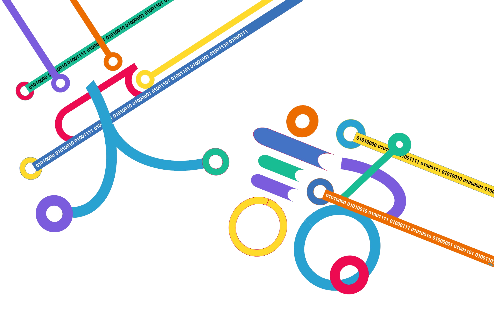

何故 英語 x プログラミンングなのか
英語
世界で英語を話す人口は17.5億人、全人口70億人の約25％を占めるまでに成長しました。このグローバル時代に求められる重要なスキルが「英語能力」です。
プログラミング
2035年には、約50％の仕事がAIやロボットで代替可能になると予測されています。プログラミングは、テクノロジーと共存するために必要なスキルです。
世界で英語を話す人口は17.5億人、全人口70億人の約25％を占めるまでに成長しました。このグローバル時代に求められる重要なスキルが「英語能力」です。
2035年には、約50％の仕事がAIやロボットで代替可能になると予測されています。プログラミングは、テクノロジーと共存するために必要なスキルです。
2020年の教育改革では、どのような社会の変化を想定していますか？グローバル社会で活躍する子どもたちに必要な力を育み、未来のリーダーを育てます。グローバル社会で活躍する子どもたちに必要な力を育み、未来を担うリーダーを育成します
近年、技術革新のスピードが加速しています。
近年、AIやロボットの活用による技術革新が急速に進んでいます。今では当たり前になっていることでも、10～20年前にはまったく想像もつかないようなことが多くなっています。 2020年に発表されたマッキンゼー・アンド・カンパニーの調査によると、2030年には日本の仕事の27％が自動化され、1660万人の雇用が代替される可能性があるという。近い将来、あらゆる分野の仕事が、程度の差こそあれ、テクノロジーに取って代わられることになるでしょう。
今後、人々は社会の変化に対応し、テクノロジーと共存する世界を実現するために必要な資質や能力、より良い社会や生活を切り開く力を身につけることが求められています。 また、インターネットやスマートフォンの普及に伴い、国境が薄れ、グローバル化がさらに進むと予想されます。つまり、世界共通語である英語でのコミュニケーションへのニーズが高まっているのです。 この「技術革新」と「グローバル化」という2つの社会背景が、2020年の教育改革に関係しているのです
。戦後の日本では、復興のために集団のまとまりを重視し、「横並び教育」が行われました。その後、「いかに多くの知識を身につけ、いかに早く正確に問題を解決するか」を重視する「詰め込み型教育」が行われ、その方針は最近まで続いていた。 しかし、新しい教育改革では、「どのような力を身につけ、何ができるようになればいいのか」を学ぶことが求められている。 小学校では「外国語教育」と「プログラミング教育」が必修化され、英語でコミュニケーションが取れることや、プログラミング的思考を身につけることが重視されています。
私たちは、これらの力を育み、未来を担う子どもたちの可能性を広げるカリキュラムを提供したいと考えています。